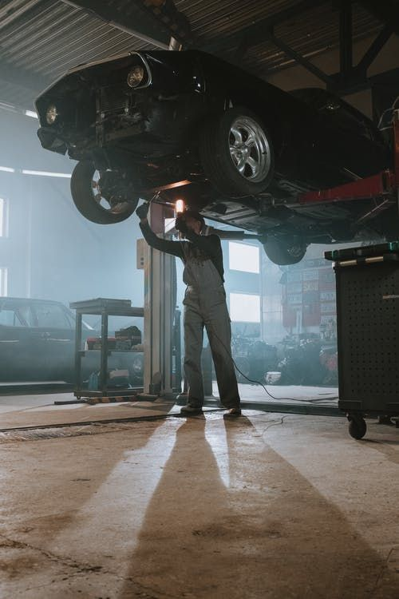
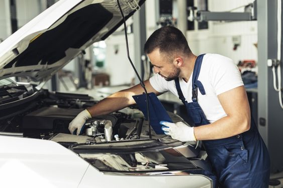

Porque nos preocupamos...
realizamos una revisión axhaustiva a su vehículo.
realizamos una revisión axhaustiva a su vehículo.

Confía en nosotros
tu vehículo está en buenas manos.
tu vehículo está en buenas manos.

Utilizamos herramientas especializadas
para recuperar y restaurar la estructura de tu vehículo en caso de sufrir cualquier tipo de abolladura.
para recuperar y restaurar la estructura de tu vehículo en caso de sufrir cualquier tipo de abolladura.